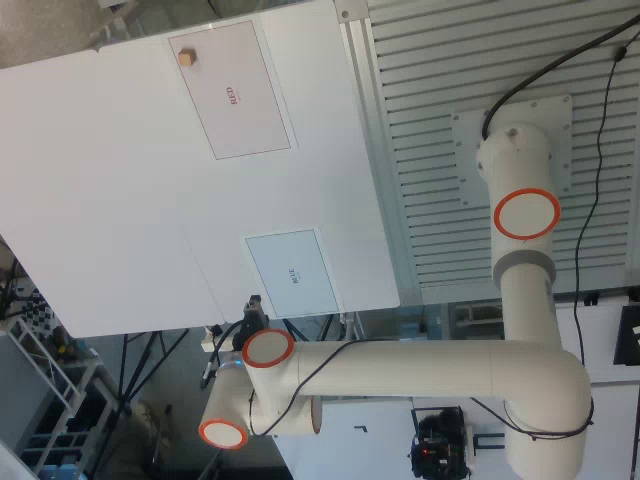
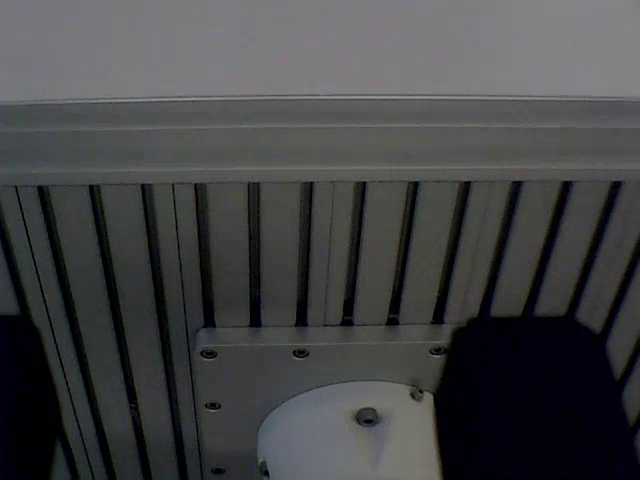
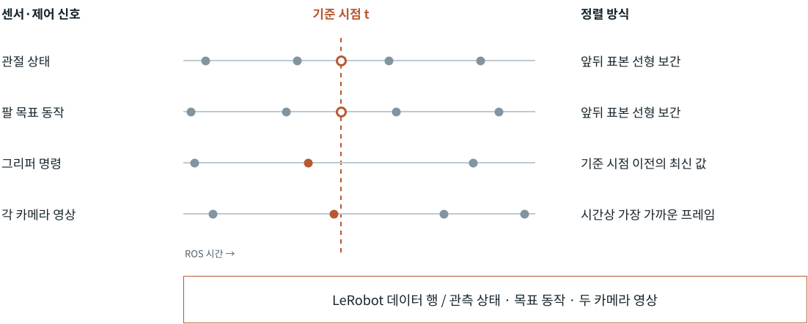
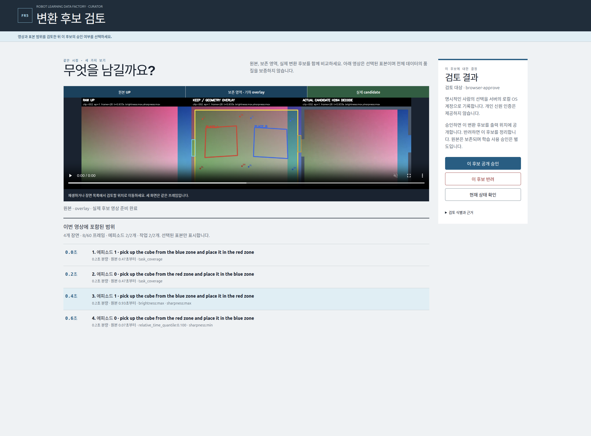

기록과 검토
데이터 기록·검토 시스템
두 카메라와 로봇 신호를 시간에 맞춰 저장하고, 기록된 영상과 변환 후보를 검토하는 시스템이다. 기록기는 LeRobot v3 데이터를 만들고, Curator는 원본과 후보를 같은 시점에서 비교한다.
저장 관측
24mm 나무 큐브 집기 · 저장 데이터의 일부

Episode 27 · 첫 표본 · 저장 관측을 불러오는 중
원본과 추출 범위 ↗같은 관측의 로봇 상태
여섯 관절 각도는 rad, 그리퍼 상태는 m 단위이다. 표시된 값은 관측 상태이며 정책의 예측 동작과 구분한다.
각 episode 길이의 10%·50%·90% 위치에서 추출한 저장 관측이다. 연속 재생 영상이 아니며 학습 정책의 실물 실행 결과와 구분한다.
기록기 동작 원리
시간 정렬 모듈
카메라와 로봇 신호는 서로 다른 시점에 도착한다. 기록기는 ROS 기준 시점마다 신호 종류에 맞는 정렬 방식을 적용해 하나의 데이터 행을 구성한다.

각 행에는 관측 상태와 목표 동작, 두 카메라 영상이 함께 저장된다. 신호의 허용 시간차와 영상 전송 지연을 확인하며, 정렬에 사용한 원래 시각도 기록한다.
동기화 사양과 구현
관절 상태와 팔 목표 동작은 기준 시점 앞뒤 표본이 모두 있어야 보간한다. 그리퍼는 기준 시점 이전 최신 명령을 사용한다. 필요한 신호가 없거나 허용 시간차·전송 지연을 벗어나면 해당 행을 만들지 않고 원인을 기록한다.
시간 정렬 함수와 기록기 코드 ↗데이터 관리
영상 변환·검토 모듈
Curator는 데이터 원본과 변환 후보를 비교하고 보존할 결과를 선택하는 모듈이다. 같은 시점의 원본 영상, 보존 영역과 변환 결과를 나란히 표시한다.

세 화면 동시 비교
원본, 보존 영역 표시, 실제 변환 후보를 같은 프레임으로 비교한다. 변환 후 필요한 작업 영역이 남아 있는지 확인한다.
표본 장면 탐색
장면 목록에서 검토할 시점으로 이동한다. 화면에는 선택한 표본의 범위와 원본 시점을 함께 표시한다.
원본 보존과 후보 관리
사용자가 선택한 후보의 결과와 원본 참조를 저장한다. 후보 보존 결정과 학습 사용 승인은 별도로 관리한다.
데이터 검사와 실행 근거
수집 데이터의 기술 검사는 영상 디코딩·행 구조·시간 정보를 확인한다. 사람이 판정하는 작업 수행 여부와는 별도로 기록한다. 위 화면은 합성 데이터의 제품 동작 예시이며, 실제 FR5 영상의 변환 품질이나 학습 개선 결과가 아니다.
화면과 실행 기록 ↗ · 저장 데이터 품질 검사 ↗ · 기술·작업 의미 판정 구현 ↗관련 시스템
기록의 앞작업 실행·저장 관리
episode 실행과 기록 확정의 수명주기.
학습 입력 검증
승인 목록·데이터 분할·학습 receipt의 결속.